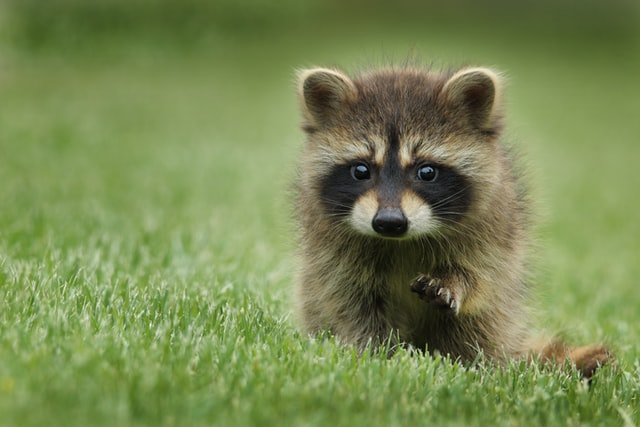

HOME>생태즐기기>생태공원소개
생태공원소개
-
- 올림픽공원을 방문하는 사람들에게 이들 자연의 친구들은 자연이 주는 행복감을 전달하며, 녹색 평화의 메시지를 전하고 있습니다.
- 일련의 환경복원 사업을 꾸준히 추진함으로써 흰뺨검둥오리, 후투티, 왜가리, 쇠백로, 중대백로, 해오라기, 검은댕기해오라기, 꾀꼬리, 뻐꾸기, 소쩍새, 꿩, 청설모, 다람쥐, 개구리, 밀잠자리, 나비 등이 집단으로 서식할 뿐만 아니라 최근에는 도심에서 쉽게 볼 수 없는 딱따구리, 누룩뱀, 너구리가 발견되고 맹꽁이떼의 울음소리가 들리는 등 생태복원의 가시적인 성과가 나타나고 있습니다.


-
- 자연과 인간의 공존을 꿈꾸다
- 선사문명과 화려한 백제 문명을 꽃피웠던 터전이 자연과 인간이 공존하는 생태공원으로 변신했습니다. 바로 자연과 하나되는 환경생태공원, 올림픽공원입니다.
- 
0